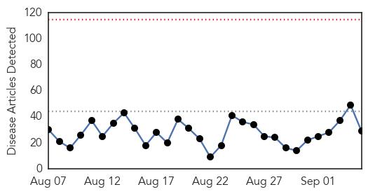

Ebola
30-Day Web Trend
0 alerts, 0 warnings

30-Day Twitter Trend
0 alerts, 0 warnings

Article Locations

Article Confidences

Top Articles:
- 1.000
- Liberia Is Declared Free of Ebola (Again)
- 1.000
- PH monkeys infected with Ebola not lethal to humans
- 1.000
- Philippine Monkeys Infected with Ebola not Lethal to Humans — Naharnet
- 1.000
- Village in Sierra Leone quarantined after Ebola death
- 1.000
- Worried about Ebola? Get your flu shot instead
- 1.000
- Nonlethal Ebola strain found in PH monkeys
- 1.000
- Africa - News and Analysis
- 0.999
- Philippine monkeys infected with Ebola not lethal to humans
- 0.999
- Philippine monkeys infected with Ebola not lethal to humans
- 0.999
- 200 to Be Vaccinated In Sierra Leone After Ebola Death
- 0.998
- Village of 1,000 people quarantined
- 0.997
- Ebola Reston virus detected in captive monkeys
- 0.996
- Review cites problems at Texas hospital during Ebola crisis
- 0.994
- Poor communication, inadequate prepartion cited in review of Ebola crisis at Dallas hospital
- 0.991
- Ebola transmission in Liberia over. Nation enters 90-day intensive surveillance period
- 0.982
- Philippine monkeys infected with Ebola not lethal to humans
- 0.981
- ‘Good’ Ebola virus found in PH monkeys
- 0.975
- Philstar Mobile
- 0.973
- Philippine Monkeys Infected With Ebola Not Lethal to Humans
- 0.959
- Ebola Reston Virus found in monkey breeding facility
- 0.933
- Failures of Dallas hospital during Ebola crisis detailed in new report
- 0.922
- Monkeys in Philippines positive of Ebola
- 0.914
- Fleet of Ambulances to boost the restoration of basic health Services Post-Ebola
- 0.904
- Review cites problems at Texas hospital during Ebola crisis
- 0.859
- Social Mobilization and Fighting Ebola in Guinea
- 0.851
- The need for a high-level bio-lab
- 0.783
- CLG News
- 0.774
- KDU Global Family Reunion Flyer
- 0.679
- More heartbreak for Ebola survivor
Top Tweets:
- 0.869
- Texas hospital wasn't prepared to handle patients with Ebola virus report says - Fox News http://t.co/boHbRuerWQ ebola EVD
- 0.869
- Texas hospital wasn't prepared to handle patients with Ebola virus report says - Fox News http://t.co/7lMVNKFe1E ebola EVD
- 0.718
- Philippine monkeys infected with Ebola not lethal to humans - Yahoo News http://t.co/LoR8lSz7B6 ebola EVD
- 0.650
- Sierra Leonean Village Quarantined After Ebola Death - The Guardian Nigeria (satire) (press releas... http://t.co/pM3tVxRJvb ebola EVD
- 0.558
- CDC Director Talks About Ebola Global Health Security - Voice of America http://t.co/bD2WPIerGr ebola EVD
Unknown
30-Day Web Trend
0 alerts, 0 warnings

30-Day Twitter Trend
5 alerts, 0 warnings

Article Locations

Article Confidences
Top Articles:
- 0.994
- Legionnaires’ disease: Health experts don’t know why new cases are rising
- 0.994
- Legionnaire's Outbreak Sparks Concern Amongst Health Officials
- 0.992
- Legionnaires’ disease strain led to pneumonia outbreak — The Medina County Gazette
- 0.991
- Legionnaires' Disease Outbreaks on the Rise in US
- 0.989
- Health Officials Very Concerned About Latest Legionnaires’ Disease Nationwide Outbreak
- 0.985
- Legionnaires' disease outbreak in several states
- 0.978
- Don’t wait: you need to get the flu shot now
- 0.971
- Deadly Legionnaires' Disease Outbreaks in NYC, Illinois and California
- 0.970
- Legionnaires’ Disease Outbreak Throws Light On Increases Cases in US
- 0.962
- Washoe County Health: Imported cucumbers tied to Salmonella outbreak
- 0.954
- Ukraine reports polio outbreak in first Europe cases since 2010
- 0.942
- Dozens sickened by salmonella outbreak
- 0.917
- Chicago Tribune
- 0.917
- Chicago Tribune
- 0.917
- Chicago Tribune
- 0.917
- Chicago Tribune
- 0.897
- Typhoid scare hits Harare
- 0.893
- U.S. authorities scramble as salmonella outbreak out of Mexico sickens hundreds
- 0.891
- Washoe County Health District Warns of Cucumber-Related Salmonel
- 0.882
- Salmonella outbreaks lead to 1 death, 285 ill in the US
- 0.881
- Dead From Legionnaires’ At Quincy Veteran’s Home
- 0.875
- State health department assisting with salmonella outbreak
- 0.866
- San Quentin Halts Intake Of Prisoners After Inmate Diagnosed With Legionnaires
- 0.861
- State cautions residents on Ohio River algae
- 0.849
- Dead South Tahoe squirrel tests positive for plague
- 0.836
- Squirrel tests positive for plague in South Lake Tahoe area
- 0.835
- Tainted cucumbers linked to illnesses in Minnesota, elsewhere
- 0.821
- South Tahoe-Area Squirrel Tests Positive for Plague
- 0.788
- + Katholieke Actie Vlaanderen +: "The Green Transversal" = "De Groene Overdwarse" = "Het Dwarse Kalifaat in Midden-Europa" = "The Mass Migration Madness"
- 0.783
- Salmonella outbreak claims its first victim, a 99-year-old San Diego woman
- 0.777
- Concern over water-borne diseases in Dominica -- NationNews Barbados -- Local, Regional and International News nationnews.com
- 0.773
- Sudden hike of Legionnaires’ disease questions many experts and their theories
- 0.772
- Tick found in Southwold tests positive
- 0.763
- California Prison inmate dies at hospital of natural cause
- 0.759
- 30 Utah residents sickened by salmonella; product recall underway
- 0.756
- FOX5 San Diego – San Diego news, weather, traffic, sports from KSWB
- 0.748
- Polio is 'returning' as countries see rare, mutated form of virus resulting from the vaccine -- Health & Wellness -- Sott.net
- 0.740
- CDC says HPV vaccination rates are lagging
- 0.736
- San Diego woman's death linked to salmonella tainted cucumbers
- 0.735
- One Texas death linked to cucumber salmonella outbreak
- 0.729
- The Caledonian-Record
- 0.725
- Cucumbers Recalled In Louisiana, Other States
- 0.722
- Multistate Salmonella outbreak tied to cucumbers; kills 1 and sickens 285
- 0.705
- CDC Weighs in on 27 State 285 Illness Salmonella Poona Outbreak Tied to Mexican Cucumbers
- 0.699
- US salmonella outbreak kills one, hundreds sick
- 0.691
- Russian River Health Warning for Animals and Children
- 0.685
- Minnesotans sickened by salmonella linked to cucumbers, Red Lobster
- 0.677
- Health officials ID 2 cases of norovirus in North Carolina
- 0.666
- Haj 2015: 21 Indian Hajis died in Saudi Arabia due to different reasons
- 0.661
- Arizona Children Hit Hard in Cucumber Salmonella Outbreak
Showing top 50 articles...
Top Tweets:
- 0.770
- MERS puzzle: 42.5% of people who have contracted the disease in KSA have died. Why isn't Saudi society demanding a better govt response?